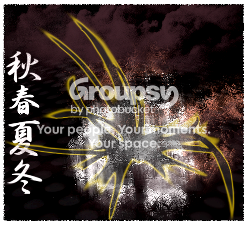
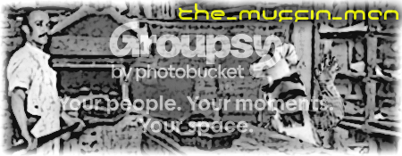
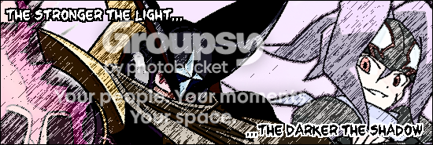

#15962 1 2007-06-29T17:58:22Z southpaw It seems like everybody is doing these nowadays, so I guess I'll make one too. This is just a brushed pic that I did.
By the way... the designs on the sides are the result of me taking a brush from photoshop and setting the size of it to something like 450+ and then clicking. Pretty simple, yet I think it looks pretty cool. Let me know what you think, I will try and do more of these, but summer term has started... I do have the weekends tho.
*deciding on whether it needs a border... whaddya think?*
EDIT: feedback would be much appreciated. also if someone knows how to get the brushes to show up in photoshop? I downloaded them from deviantART and then I put them in the AdobePhotoshopCS2/presets/brushes/Adobe Photoshop Only folder but they aren't showing up... Help?
#337007 2 2007-06-29T19:39:25Z Chase Reeeeeeeealy nice, if that's for sale, I'd like it once I've stopped advertising

#337029 3 2007-06-29T20:37:39Z usaswim That one is fantastic!
For brushes, I just double-click the file, and it should automatically download.
#337082 4 2007-06-29T23:11:28Z Mouta @321southpaw
i think you must do the following:
1- open photoshop! (duh!)

2- select brush tool;
3- press in the arrow to choose brush;
4- press the other arrow inside the box that appears;
5- then select "load brushes"
6- select the brushes you want!
and i think thats how it works! not shure thou, cause i have never used any brush besides the standard ones... i'm still noob at photoshop!
hope that helps!
#337083 5 2007-06-29T23:13:51Z southpaw Thanks, this is really my first one. didn't take all too long either.
CtB, if you would like to use it be my guest. I can send you the .psd file too if you want.
#337088 6 2007-06-29T23:22:50Z Mouta how and btw, i forgot...
your sig looks pretty sweet! nice work!
edit: oh! and what i told you to do... did it worked?
#337179 7 2007-06-30T02:51:36Z southpaw @mouta:
I haven't tried it yet. I just went home for a litle while after holding a spot in line for someone for the iPhone (sheesh, talk about some crazy Mac addicts), so I haven't gotten there yet. But thanks! I will definitely try to do that tonight or tomorrow and let you know how it worked out. Thanks for the feedback too.
EDIT: Awesome mouta, it worked! Thanks. And now to show my newest creation....
This was an experiment with a 3D-ish border type. Let me know what you think! The theme is based off of the Rorschach ink blots, which I thought the ink blots were a good design, but everything else was iffy in my mind, so I brought it here.
321southpaw
#337408 8 2007-07-01T04:11:55Z usaswim The first one is still totally my favorite. It might've looked better if the opacity of the border was lowered a bit..
#339065 9 2007-07-05T09:36:23Z southpaw I made a new image just now. I really like it, especially since I didn't use a filter with it but almost all the filters in Photoshop looked good with this. Enjoy, it is up for grabs and I can personalize it for ya, ie put your username somewhere.
also I made this one but nobody seemed to notice:
This one is up for grabs too.
#339425 10 2007-07-06T12:56:07Z Samrat16 The very first one is awesome and the second to last one is not bad either. The third one is washed out, you need to set the brightness/contrast under Image->Adjustments->Brightness/Contrast
I can't give opinions about ink blots and/or splatter brush style images because I'm not a huge fan of them. Good job, though and keep it up.
#344443 11 2007-07-18T09:03:20Z southpaw I just made this. It is 2am so I am going to bed now. Enjoy it, let me know what you think!

#344526 12 2007-07-18T17:43:59Z Samrat16 That is sweet! 9/10
#344707 13 2007-07-18T22:50:24Z southpaw Thanks! I just downloaded some new brushes and came up with this.
#345008 14 2007-07-19T12:02:41Z Samrat16 Let me guess how you made it:
1. Black Grunge brushes on the canvas
2. Inverted selection
3. Auto levels
4. Red Grunge brushes
5. Create new layer
6. one Nova Equinox brush (yellow)
7. Paint bucket the brushe (black)
8. Alien Splat Skin(Edges) in Fireworks
9. Make opacity lower
10. Text
I'm probably wrong on half of them, but looking through the steps in my mind, it was a great idea.
#345176 15 2007-07-19T21:23:42Z southpaw 1. Looking through axeraider70's brushes, I pick out one of his grunge styles.
2. I load the brushes and just test them out. Randomly I made the grunge brush. The purple-y part used to be light blue. The white grunge was black.
3. took some Urban brush I found and made a new layer. Used one with a lot of holes (if you look closely there are some holes in the background below the clouds.
4. Used Kanji Season brushes for the text.
5. Nova Equinox brush (orange) used Outer Glow.
6. Added clouds with the cloud brushes I downloaded.
7. While trying to make a border I accidentally pressed Control+I and got the picture inverse. The Equinox was on a different layer.
8. Messed with the color settings for the Equinox brush, the outer glow stayed the same because it looked cool.
9. Brightness/Contrast and did the border in torn edges or something (I selected about five pixels within the picture and then inversed the selection to only get the outside border to be pixelated).
10. Posted it here
All of this was done in Photoshop. All brushes were loaded from deviantART. Nice try tho, lol.
#345195 16 2007-07-19T22:19:13Z Tk_ArtS tHESE Are pretty cool I like them!
#345910 17 2007-07-21T21:01:14Z southpaw A wallpaper I have been working on...
#345947 18 2007-07-21T22:03:46Z Impulse That wallpaper is cool. If your just beginning, then I would say you have a lot of potential.
#345957 19 2007-07-21T22:32:45Z Samrat16 Yes, another wallpaper artist!!! That looks good, too. If you ever need any help, feel free to PM me. Seriously, though, that looks really good; especially for your first attempt.
#346158 20 2007-07-22T13:11:28Z southpaw heh...
Thanks guys. It would have turned out a little better had I not made the original dimensions 680x540... I have no clue why I did that, I just wasn't thinking I guess. Anyway, thanks again!
#346496 21 2007-07-23T09:15:25Z southpaw haha, I have decided to make sigs for people who don't need them. the first victim or target or whatever you want to call them is usaswim...
hope you kinda like it. If swim doesn't want to use this or doesn't respond then I can replace his name with someone elses if they would rather have it.
#346530 22 2007-07-23T12:45:47Z Samrat16 Wow, that's nice. I get that professional graphic design feel, if you know what I mean.
#346540 23 2007-07-23T13:13:25Z usaswim haha, I have decided to make sigs for people who don't need them. the first victim or target or whatever you want to call them is usaswim...
hope you kinda like it. If swim doesn't want to use this or doesn't respond then I can replace his name with someone elses if they would rather have it.
Woah, I really like the style and color choices, they're awesome! Except it's too big..
#346666 24 2007-07-23T20:36:38Z southpaw well... I could shrink it. if you want to use it that is. I will probably shrink it anyway. thanks tho, glad to hear you like it.
#347939 25 2007-07-27T09:09:29Z southpaw
something I made when I was bored and thinking of Trigun. Enjoy!
#348049 26 2007-07-27T19:22:45Z southpaw 
The sig I made for Muffin_Man.
#348060 27 2007-07-27T19:55:57Z The_Juggler Wow, I wish I had a bit more graphic design ability. But alas, I am but a computer science major - and I can't even program so well. Should have taken graphic design.
Do you think maybe I need a new signature graphic? I have never gotten somebody else to do a graphic for me, do you think I should?
2
#348062 28 2007-07-27T20:08:47Z usaswim I actually like your signature, The_Juggler. It fits you very well.
Oh BTW, 321southpaw, that wallpaper is amazing. I just drool at the color choices. You are fantastic at picking amazing color schemes.
#348115 29 2007-07-27T23:43:15Z southpaw wow... usaswim that means a lot coming from you. thanks!
and I have decided I am going to pronounce your name like this from now on:
oosaswim
it cuts down on 1 syllable making it easier to say.
And here is another unwanted sig for The Juggler:
#348310 30 2007-07-28T15:11:13Z usaswim I don't like the font. At all. And be sure your sigs don't break the forum rules, because some of them are too big.

#348321 31 2007-07-28T16:26:11Z catspride Impressive work, Southpaw. Either way that you could show me how you did that sweet background?
Good job. I like.
#348571 32 2007-07-29T09:06:53Z southpaw
a new wallpaper. a little pixelated in one part, but I like it just because of the colors and stuff. what do you think?
@xdude:
The first background was pretty simple.
1. I took the last brush in AxeRaider's Radon brush set and set the color to black.
2. I made a second layer and found a blue color that I liked and made it offset slightly.
3. I took the seventh brush from the Litihium brush set, made it white and layered it over the Radon brush.
4. Used the magic wand and selected the Lithium brush. Then I chose both Radon brush layers and erased the selection.
5. Deselect. Then used the blur tool over the erased section.
6. Did some crazy editing by erasing parts of the Lithium brush to make it look like it was part of the Radon brushes.
7. used some other brush in a set by AxeRaider for the part in the top left. Made a selection that was 3 pixels away from the border and used Stroke to make the inner border.
Oh, the best part: make original dimensions 640x580, then blow it up to 1024x768.
#348602 33 2007-07-29T13:35:35Z usaswim @xdude:
The first background was pretty simple.
1. I took the last brush in AxeRaider's Radon brush set and set the color to black.
2. I made a second layer and found a blue color that I liked and made it offset slightly.
3. I took the seventh brush from the Litihium brush set, made it white and layered it over the Radon brush.
4. Used the magic wand and selected the Lithium brush. Then I chose both Radon brush layers and erased the selection.
5. Deselect. Then used the blur tool over the erased section.
6. Did some crazy editing by erasing parts of the Lithium brush to make it look like it was part of the Radon brushes.
7. used some other brush in a set by AxeRaider for the part in the top left. Made a selection that was 3 pixels away from the border and used Stroke to make the inner border.
Oh, the best part: make original dimensions 640x580, then blow it up to 1024x768.

#348661 34 2007-07-29T17:53:33Z Samrat16
a new wallpaper. a little pixelated in one part, but I like it just because of the colors and stuff. what do you think?
Very nice, but I would have liked to see more of the left side. It looks cut off.
The first background was pretty simple.
1. I took the last brush in AxeRaider's Radon brush set and set the color to black.
2. I made a second layer and found a blue color that I liked and made it offset slightly.
3. I took the seventh brush from the Litihium brush set, made it white and layered it over the Radon brush.
4. Used the magic wand and selected the Lithium brush. Then I chose both Radon brush layers and erased the selection.
5. Deselect. Then used the blur tool over the erased section.
6. Did some crazy editing by erasing parts of the Lithium brush to make it look like it was part of the Radon brushes.
7. used some other brush in a set by AxeRaider for the part in the top left. Made a selection that was 3 pixels away from the border and used Stroke to make the inner border.
Quite clever. We all love Axeraider's brushes, don't we?
Oh, the best part: make original dimensions 640x580, then blow it up to 1024x768.
That makes me shiver. I'm suprised that you didn't lose image quality when doing that.
#348957 35 2007-07-30T10:17:52Z southpaw Here is my background I just finished.... I can't really believe I made it even. I think this has to be the best work I have put out so far, but that is just me. What do you all think?
#348982 36 2007-07-30T13:01:41Z usaswim You stole my idea D:
I think you ber overused the splatter brushes and attempted to brighten up all of the black. It just looks so messy.
#349229 37 2007-07-31T02:51:07Z epigone Quote
http://www.deviantart.com/deviation/51462138/
That's what I was thinking. It's a good concept, just overdone.
#349889 38 2007-08-01T16:56:30Z southpaw Here is another unwanted sig, although this one was really unwanted. I made it for skyline buy thought maybe somebody else might want it. If you do just let me know.
+
#349890 39 2007-08-01T16:57:22Z usaswim It's really nice! I like how you were able to incorporate the fractal trees in there.
#349919 40 2007-08-01T18:13:20Z Aju I really like that latest backround you posted, though I feel like you could have done a better choice color-wise.
#349945 41 2007-08-01T19:37:17Z Samrat16 The wallpaper:
If you were trying to the thing where there's a shilouette in the middle and colorful everything bursts from the middle, you could have nailed it. If you made the center purely black, added some gradient changing color to the background and the butterflies, and got rid of some of the splatters and the render in the bottom right, I think it would have looked a lot better.
#349951 42 2007-08-01T20:14:57Z southpaw hmmm... I did overdo it a little. It was 4 in the morning when I finished that I think... So it looked really great then. I like it still but how about I try to do it again but maybe at around, oh say, 4 in the afternoon? That should be good.
EDIT:
A sig I just made for MSabata...

WDUT? (What do you think... that acronym
probably won't catch on but let's see how long we can make it last

)
#350651 43 2007-08-03T07:11:39Z southpaw 
another unwanted sig. thought it turned out pretty good.
#350670 44 2007-08-03T07:43:01Z Skyline That one is absolutely amazing. If you change the name to "Skyline", I'll take it.

A matching avvy would be nice, but if you don't feel like it, no probz.
#350745 45 2007-08-03T13:15:50Z usaswim
another unwanted sig. thought it turned out pretty good.
Woah, that one is insanely good. I just... love it.
#350757 46 2007-08-03T14:21:02Z Chase You have a DeviantArt page? If not, make one.
#350793 47 2007-08-03T16:57:48Z southpaw You have a DeviantArt page? If not, make one.
I got one now. 321southpaw is mah username. I'll start uploading meh images.
#350808 48 2007-08-03T17:17:56Z Guest If you could make a decent wallpaper of Mlissa Theuriau, that would be spiff-o-matic.
#351207 49 2007-08-04T09:43:49Z southpaw another unwanted sig. I didn't know who to make one for, then I was looking through my brush designs and saw a skull. The next thing I knew I was making a sigatar for Smort. So here you go man, a sig without making a request.
+
Comments, criticism? and swim, I'm sure you already have an issue with the font
, haha, jm.
#351209 50 2007-08-04T10:11:40Z fingersonthefrets for the tree one, delete the right (left right right) tree and it would be HEAPS better
the new on is quite good
#351232 51 2007-08-04T12:01:46Z smort I LERVS it!
#351245 52 2007-08-04T13:44:48Z usaswim You're getting better than me ;_;
#351297 53 2007-08-04T17:46:07Z southpaw You're getting better than me ;_;
oh, don't feel sad usaswim. I'm not getting better than you, I am just finally finding my style. Your images are of a different quality of work, entirely different for that matter, but that doesn't make them any better or worse than my images.
Besides, I just mess around with things like linear light and difference and overlay to get those kinds of effects I'm using. For example (and this may help other people out):
For the abstract brushes on the sides of the skull I set the brush setting to Difference and the layer setting to Linear Light, then clicked the spot where I wanted it 3 or four times to get that effect of multiple colors. Actually I've been using linear light a bunch lately. You might want to try it out and download some new brushes for a fresh start at something cool.
Here are the brushes I recommend:
Fantasious Brushes
EDIT: another one -
Abstract vs. Grunge
These brushes use a gradient which looks really cool if you use Color Burn or Difference for the brush and Linear Light for the layer settings. Don't click the brush more than twice though if you are going to use them because they have a nice swirl in the clouds that is hard to see otherwise.
#351317 54 2007-08-04T18:51:23Z BanjoDave Your images FTW. Seriously.
#351336 55 2007-08-04T19:30:06Z usaswim I just love your color choices so much... tell me your secret ;_;
Oh, and 321southpaw, that wallpaper reminded me a lot like this -
http://www.deviantart.com/deviation/21167530/#351348 56 2007-08-04T20:18:35Z southpaw I just love your color choices so much... tell me your secret ;_;
haha, there isn't really a secret so much as experiment. I mean, when I am doing color choices I go through almost the entire color wheel looking for something, seriously. When you are making your image don't think so much of the color until you have the right brush. I think for Smort's especially I used about three or four different abstract brushes before I found the one I wanted, which took about a minute. Then once I found the one I wanted I just kept stepping backwards and then set the brush on the canvas a couple times to see what a new color or modification to the brush looked like. That step took about ten minutes.
If that was confusing in any way here is a much simpler version to choosing colors:
Take the color of the background or a part of a brush that had a gradient type to it. Then open up your color picker and don't do anything except move the little circle around and finding something you think might look good. If the color doesn't work then choose a different color using the same method. If after a while you still haven't found a decent color, move the bar on the side up or down a little bit. Usually you can find a color that works just by slight changes with the color wheel.
Hope that helps
")
#351359 57 2007-08-04T20:53:24Z smort Oh, man. These colours are so attractive, yet... in your face.
I agree with usa- I love your colour choices.
#351410 58 2007-08-04T23:05:17Z southpaw wow, thanks guys, you all really love my color choices. That is awesome and means a lot. Thank you.
BTW, here is another image I made (I had the day off, what can I say?):
This one is up for grabs, but I would appreciate it if you were actually going to use it instead of just claim it. I can make an avvy too, as well as add links to your maps or something.
TAKEN BY ME
edit: I accidentally merged the two layers in the top and that is why they look weird (in response to usaswim). Then I did a bunch of stuff and forgot about it until it was too late, because photoshop is renarded with the fact that you can only step backward something like 15 times.
#351419 59 2007-08-04T23:38:44Z usaswim That one got a little funky in places. But I still love it anyway.
#351500 60 2007-08-05T04:34:30Z Ignate Great images. Especially liked Skyline's. Keep it up.
#351569 61 2007-08-05T10:58:24Z southpaw A sig I just finished for Martyr. He doesn't know what it looks like yet, so some changes might be made, but I like it nevertheless, considering my only two requirements were put a raccoon face somewhere in the background and make it nice.
Whaddya think?
MAJOR EDIT!!!
Quote
This is being quoted so that you all see it and read it because this is very important. Most of my older images have become quite retarded very recently, as I just noticed it a few minutes ago. Anybody who is using a sig that I made and cannot see it please be patient while photobucket figures their sh*t out. Unless someone wants to recommend a better sight that doesn't just make your images non-viewable at random, please wait, I'm sure everything will get figured out soon.
Sorry for the inconvenience! (specifically Juggler and MSabata so far, but I fear there are others)
#351610 62 2007-08-05T15:41:31Z usaswim Again, I love the colors. But the butterflies...
#351622 63 2007-08-05T16:16:55Z Guest #351636 64 2007-08-05T16:44:00Z catspride
another unwanted sig. thought it turned out pretty good.
I love it too, thanks!!!
Plus, how did you blow the background up??
Oh, the best part: make original dimensions 640x580, then blow it up to 1024x768.
#351671 65 2007-08-05T18:37:36Z southpaw When you click "New..." you can set the dimensions of your image. Unfortunately 640x580 is not my idea of background size, so I went to Image>Image Size... and increased the size of the image in pixels, not in inches. Fortunately CS2 has this ability to map our your image and replicate it in the fullest quality it can, so I didn't lose very much quality thank god.
@obby:
Sorry, I'm trying to make it so that it looks good but I think after doing Martyr's sig that I have an idea how to make it look
way better (having it fade into the background color, which by the way is a light blue).
@usaswim:
Again, I love the colors. But the butterflies...
Yeah, I was debating the butterflies too, but I think it looks better with them than without because they balance out the darkness in that corner without making your eyes focus entirely on the butterflies.
EDIT:
Quote
BTW, the "user posted image" was just me not clearing up my browsers cache. It is all done now, so thank god it was only my browser and not your guys actualy images.
#351681 66 2007-08-05T19:28:53Z southpaw Where's my wallpaper??? 
here is part of it.
It is unfinished. I'm posting it here to get ideas. anybody have any? And please don't just say "oh delete that because it doesn't fit," I would rather have you give me an idea of where to go next. You can still tell me to delete something but try to add some input that will help me because I'm stuck...
EDIT: forgot picture...

#351688 67 2007-08-05T19:43:53Z usaswim Pixelled image + 08:33 = Not cool.
You should've vexelled or vectorized her.
#351690 68 2007-08-05T19:50:26Z southpaw Pixelled image + 08:33 = Not cool.
You should've vexelled or vectorized her.
aahhh.. things I have not learned yet. How do you vexel or vector? I only know the basics and a few advanced tricks of Photoshop.
#351692 69 2007-08-05T19:54:02Z catspride Pixelled image + 08:33 = Not cool.
You should've vexelled or vectorized her.
aahhh.. things I have not learned yet. How do you vexel or vector? I only know the basics and a few advanced tricks of Photoshop.
I hear ya! I'm in the same boat as you. Someone tell us.
#351706 70 2007-08-05T20:22:25Z usaswim Well, I use live trace in Illustrator, or for photoshop, you can refer to infinitum's vexel tutorial somewhere in the image forum. It takes a bit longer, but you can get it exactly how you want it.
#351724 71 2007-08-05T20:55:33Z Samrat16 A bit longer? More like 2-3 hours! I'd rather use live trace...if I had Illustrator.
#351725 72 2007-08-05T20:57:20Z southpaw haha, yeah, I tried livetrace and it looked like sh*t. I'm using the vexel tutorial now, and yes it is taking a while but I'm just starting out, so maybe it will take longer than I thought... bah humbug.
#352254 73 2007-08-07T05:34:15Z southpaw
Tk_Arts sig that I made for him. I just hope it doesn't screw up his sig because there are so many characters for this. 5 different images!!!
EDIT: also an unwanted sig for mistaken72...
#352328 74 2007-08-07T13:46:19Z usaswim I liked the second one more than the first one, especially how you used the brushes.
#352373 75 2007-08-07T15:52:21Z smort Really?
I liked the first one. Anyways, sorry for not using the awesome sig you gave me anymore. I really love it, but nothing in the world can compare to this laser snowman.
#352403 76 2007-08-07T17:02:31Z southpaw @ smort:
hey it's cool. That laser snowman does kick ass. If Tsukatu had henchmen, I'm sure they would be laser snowmen, so yeah.
#352644 77 2007-08-08T07:21:28Z southpaw A new sig i made! There are two, they are the same, but one is for LNKNPRK and the other is for the SOTW contest.
and
I like the second one twelveteen-thousand more times than the first one. And you?
#352673 78 2007-08-08T10:06:09Z fingersonthefrets the purple and the yellow in the first should be darker
#353457 79 2007-08-10T09:32:35Z southpaw I decided to break out of my style slightly and try something a little different (at least technically I am, maybe not so much visually. This unwated sig is for George.

constructive criticism is greatly appreciated, considering this is a little different kind of style.
#353494 80 2007-08-10T13:15:04Z usaswim For once, I don't like the colors.
#353522 81 2007-08-10T14:15:11Z Samrat16 Yeah, colors. The design is really nice but the colors need working on.
#353565 82 2007-08-10T15:56:15Z incluye can I use the desert thingy as my signature for a little while?
#354167 83 2007-08-11T19:00:54Z southpaw yeah incluye. go ahead, I can't personalize it for you right now because I am at my grandpa's on dial-up, but I will do it once I get home. Either tomorrow evening (Pacific Standard Time) or the next morning.
#354225 84 2007-08-11T20:43:35Z incluye i think I can get it.
#355137 85 2007-08-14T08:06:04Z southpaw okay... so I got a bad review on my last sig with the colors, so this time I decided to keep the colors as little as possible. The style is messy, and there is a lot going on but I love this image to death. And it is up for grabs.

I think I'll make this an unwanted sig for abSoLuTe... seeing as how he is a new imager. I guess I should make one for T3chno too, since he is a new imager also...
#355140 86 2007-08-14T08:24:18Z BeSilence OH MY **** THAT IS AWESOME!
#357810 87 2007-08-21T07:48:54Z southpaw 
ignate's unwanted sig, although he might want it, kinda like how xdude wanted his, and skyline liked xdude's first one, so I made that one for him... I like the font and the design in the background, and I think I managed to somehow fit the stormtrooper helmet in there. any comments, suggestions, concerns on how I'm failing at life?
#357961 88 2007-08-21T19:26:36Z southpaw
my latest wallpaper. Changes may be made. The whole thing was done in photoshop, with no camera manipulation, although I'm sure maybe you can tell the entire thing was brushed. anyway, I like it, sort of a calm serene valley.
#357994 89 2007-08-21T21:18:38Z abSoLuTe I think I'll make this an unwanted sig for abSoLuTe... seeing as how he is a new imager.
Thanks again. I put it in my latest image spot in my spoiler tag.
I dont liek the wallpaper in general. But the fact that you made all that with just brushes it pretty amazing.
#357995 90 2007-08-21T21:19:06Z spoon You actually can't tell it's brushed, really. Also, that sig for Absolute is to die for. Seriously.
#358000 91 2007-08-21T21:21:16Z abSoLuTe You actually can't tell it's brushed, really. Also, that sig for Absolute is to die for. Seriously.
Yes, its unnoticeable, if you hadnt have told us you brushed it, we probly would have never guessed.
#358077 92 2007-08-22T00:22:38Z spoon ^Exactly^
Also, you working on an unwanted sig/avii set for someone? Cause I'd gladly take one.
#358080 93 2007-08-22T00:32:29Z usaswim although I'm sure maybe you can tell the entire thing was brushed. anyway, I like it, sort of a calm serene valley.
Brushed? I... I... but.. bu...
...
#358089 94 2007-08-22T01:09:11Z southpaw although I'm sure maybe you can tell the entire thing was brushed. anyway, I like it, sort of a calm serene valley.
Brushed? I... I... but.. bu...
[a bunch of line breaks]
...
yeah. the clouds are by Javier, the mountains are by prudentia, gradient was my own, the clouds in the valley part took a while and I added a bunch of fog. I've been working on this idea for a while but didn't get around to finishing it until today.
@spoon:
The idea is that I make sigs for people who don't ask for them, although I guess martyr asked for his and I made it. yeah, I can make you one. PM any specs you want, just try to keep em minimal if possible, like an image you want, or colors you like.
#358349 95 2007-08-22T18:59:08Z Samrat16 Those clouds did look a tad surreal... That's why I assumed it was brushed, or that you took a photograph of a valley and incorporated the sky into it. Good job.
#358941 96 2007-08-24T06:32:31Z southpaw a sig and avvy I made for spoon. pretty cool huh? It's my first time using scan lines so I'm a little excited. but anyway...
+
#358944 97 2007-08-24T06:40:27Z fingersonthefrets cant say i like the font, rest is nice though
how do you do the gridlines thing? i might get back into image making

#358947 98 2007-08-24T06:58:05Z southpaw The Font:
that is a spoon as the letter "P" in case you didn't catch that.
Scan Lines:
1. click New...
2. Set your height and width to 5 pixels
3. use the pencil tool and with the color black make a diagonal line
4. goto Edit>Define Pattern and then it is in your pattern window.
The scan lines look best with "Soft Light" and you might need to change your opacity, but that is up to you.
#358949 99 2007-08-24T07:20:35Z fingersonthefrets The Font:
that is a spoon as the letter "P" in case you didn't catch that.
Scan Lines:
1. click New...
2. Set your height and width to 5 pixels
3. use the pencil tool and with the color black make a diagonal line
4. goto Edit>Define Pattern and then it is in your pattern window.
The scan lines look best with "Soft Light" and you might need to change your opacity, but that is up to you.
thanks and i realised the p was a spoon i just didn't like it much, like my new sig? I love it to death
#358950 100 2007-08-24T07:39:02Z 29403 321southpaw, these are really nice.

#360524 101 2007-08-29T03:25:37Z southpaw http://321southpaw.deviantart.com/art/Kingdom-come-63545296
okay...
I know some of you know I'm not religious, or at least I don't identify with any specific religion. The truth is I actually value certain things of each religion that I think are important, or at least from the religions I know some things about (namely Christianity, Judaism, Bhuddism). Some things really speak to me though, and Jesus Christ dying on the cross is one of them. Anyway, the image is a little too big to post here so I am going to provide a link. I really think this is one of my best works as far as wallpapers. You can download it too, and I might make a 1024x768 for some of you, but the current download is at 1280x1024 because lots of people here have big monitors. anyway, let me know what you think.
#360543 102 2007-08-29T04:07:28Z Grassman7z7 Can I get one of the Virgin Mary with a Machine Gun?
For some reason, that sounds like the best thing ever right now.
You don't really have to do it tho, although I'll gladly accept one if you did.
Keep up the good work!
#360668 103 2007-08-29T20:41:23Z usaswim I never get tired of looking at your images. Just a 1px border around them would add the perfect touch.
#360820 104 2007-08-30T04:38:27Z southpaw @grassman7z7:
what dimensions?
@usaswim:
thanks
I try not to put borders on my wallpapers, but i've been slacking on the borders meh siggahs.
EDIT:
a new unwanted siggy I made for incluye. hope he likes it!
#360835 105 2007-08-30T06:15:14Z Grassman7z7 Heh, really?
Anything is fine, really. I'll just put it in my Sig, so you decide.
Any colors are fine (Blue if you are having trouble. I like Blue)
#362102 106 2007-09-04T08:33:31Z southpaw @grassman: sorry that I haven't made your image yet. I'm kinda lost on how to do it. I had a pretty good idea but couldn't pull it off on that particular day. I'll try again soon. Do you want her holding the machine gun or just have it nearby as though not to mess with her?
another unwanted sig, that is kind of a wanted sig because Rock_man asked for it in the Signatures on Demand thread, but someone already made one for him so this is going in the unwanted sig collection (also because it looks freaking cool)


#362660 107 2007-09-06T07:33:09Z southpaw a new unwanted sig for BeSilence. Hopefully he likes it...
#362761 108 2007-09-06T21:25:50Z usaswim Don't really like that one... colors are bland and the shape in the middle stands out too much... So does the font..
#364596 109 2007-09-13T03:54:08Z southpaw haha, I love this.
For Trogdor007:
the most awesome pic ever. comments?
#364598 110 2007-09-13T04:00:30Z T3chno haha, I love this.
For Trogdor007:
the most awesome pic ever. comments?
1337.
'nuff said
#364625 111 2007-09-13T08:13:08Z southpaw and now for the unveiling of my latest signature, which I am very proud to say is for...
TSUKATU!
I like this one a lot. I tried to keep the glowy guy in his current sig and then expand on it a little. The right side just had too much darkness to be a real sig. So I revamped it and hopefully it either is a little better or a lot worse. comments?
(note:photobucket was being screwy so it is an attached image for now)
Attachment (lost): post-20-1189671209.png
#364654 112 2007-09-13T14:09:32Z Gforce20 Holy kawowzers, that's just incredible!
#364693 113 2007-09-13T19:07:59Z southpaw 
another unwanted sig. This one is for nevermore in case you couldn't read the font. Comments?
#364714 114 2007-09-13T19:58:06Z Samrat16 Amazing stuff! Too bad they can't really be used...
#364717 115 2007-09-13T20:01:31Z southpaw well actually...
If nevermore or anybody decides not to use the sigs then they are up for grabs. But I give priority to those I made them for. If they don't want to use it, or will allow someone else to use it then I change the name. I'll probably make a few sigs that are empty now tho so that people can have some choices.
#364741 116 2007-09-13T21:09:26Z usaswim Aaargh, that border is so thick.
#364931 117 2007-09-14T14:18:43Z fingersonthefrets Aaargh, that border is so thick.
i think it works though
#365141 118 2007-09-15T09:10:38Z TaserScar i dont know wheter youm want to

but can you make one which has a transformer on it (preferably Megatron)
Taynkyoo Evreewun
#368395 119 2007-09-30T04:33:58Z southpaw mah latest siggy, and this one is up for grabs (unless someone on IRC wants it, because I just posted it there)...

Comments? Criticism?
#368402 120 2007-09-30T05:04:30Z T3chno Thats really nice, but looks pixelly with the strange canvas effect or something.
#369520 121 2007-10-04T02:58:30Z southpaw
a new sig. I don't like it much. It's open for use if anybody wants it, I'll put your username somewhere.
#369879 122 2007-10-05T20:57:11Z spoon I'll take it. The colors match really well, save for the big brush in the middle. But I'll take it nonetheless.